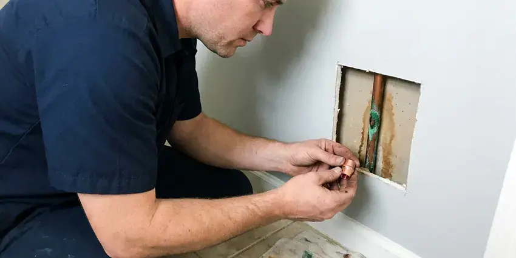

Foundation Leak Repair in West Des Moines, IA
Cracks in the floor, damp baseboards or a spinning water meter? We find and repair plumbing leaks under foundations in West Des Moines, IA.
- Reroute or Direct Repair
- Licensed & Insured
- Fast Leak Detection
- Iowa Plumbing Pros

Your Trusted Foundation Leak Repair Experts in West Des Moines, IA.
Call now and we will pinpoint the leak and explain whether a direct repair or a reroute makes more sense.
Accurate Foundation Leak Repair in West Des Moines, IA for Water and Drain Lines
KFR Plumbing focuses on detecting and repairing foundation leaks, also known as slab leaks, that threaten homes across Iowa. Our team uses advanced tools and techniques to pinpoint the exact location of leaks beneath your concrete slab, heading off further damage to your property in West Des Moines.
Our expertise includes:
- Long-lasting epoxy and hydraulic cement repairs
- Locating hidden leaks under concrete slabs.
- Accurate leak detection technology

Additional Plumbing Repair Services in West Des Moines, IA
We offer expert plumbing repair services across West Des Moines, IA to stop leaks, clear blockages, and keep every fixture working the way it should.


Customers
Why Choose KFR Plumbing for Foundation Leak Repair in West Des Moines, IA?
We act quickly to stop the water and choose the repair method that best protects your home's structure, flooring and budget.
- Advanced Tools, We rely on modern leak detection equipment, including ground penetrating radar and video pipe inspection, to accurately locate hidden leaks without extensive demolition.
- Accurate Locating, We pinpoint the leak before cutting so we disturb as little concrete as possible.
- Durable Repairs, Our repairs use high-quality materials and proven methods for durable results on your foundation.
Citywide Coverage
No matter which part of West Des Moines you live in, we can get a technician to you quickly. Foundation leaks need prompt attention, and we treat them that way.
Experienced Team
Our team is made up of highly trained and certified plumbers with years of experience in foundation leak detection and repair. They know the foundation issues that Iowa homes face.
Safety-First Approach
All repairs meet local plumbing code, and concrete patches are compacted and finished correctly. When a permit is required for rerouting or repiping, we handle it.
Trusted Certified West Des Moines Plumbing Services Professionals
At KFR Plumbing, we take pride in providing certified plumbing services throughout West Des Moines, IA. Backed by leading industry credentials, our experienced plumbers combine technical skill with genuine customer care. Whether it is repair, installation, or maintenance, we follow strict safety and quality standards to deliver lasting results you can trust.
Call Us Now PHCC Plumbing Contractor Recognition
PHCC Plumbing Contractor Recognition Better Business Bureau (BBB) Accreditation
Better Business Bureau (BBB) Accreditation Angi Certified Pro
Angi Certified Pro ISO 9001 Quality Management Certification
ISO 9001 Quality Management CertificationThorough Foundation Leak Repair Services in West Des Moines, IA
Advanced Leak Detection Technology in West Des Moines, IA
The ability to precisely locate a foundation leak is essential for an effective repair. KFR Plumbing invests in modern leak detection technology, including high-frequency listening devices and specialized camera inspections, to pinpoint leaks with precision. This technology allows us to identify the exact location of the break, whether it's a small pinhole or a significant burst, minimizing invasive searching and repair costs for our West Des Moines, IA customers.

Copper Pipe Leak Repair in West Des Moines, IA
Many older homes in West Des Moines, IA have copper water lines beneath their foundations, which can corrode over time due to soil conditions or water chemistry. Water softeners are a standard upgrade in Iowa homes, helping protect tank water heaters, faucets, and appliances from mineral damage. When these copper pipes develop pinhole leaks or cracks, they need specialized repair. Our technicians repair or replace sections of damaged copper piping, ensuring a durable seal that withstands pressure and ground movement and helps prevent future leaks.
Post-Tension Slab Leak Repair in West Des Moines
Many newer homes are built on post-tension slabs with steel cables under high tension. Cutting into these slabs takes care and scanning to avoid hitting a cable. We use ground-penetrating radar or other scanning methods before opening the floor. When the risk is too great, rerouting the plumbing is usually the safer option.
Direct Foundation Leak Repair in West Des Moines, IA
When the leak is in an accessible spot and the rest of the pipe is in good condition, direct repair is often the most affordable choice. We cut a small opening in the floor, dig down to the pipe and replace the damaged section. The soil is compacted and the concrete is patched to match. Flooring can then be restored by your flooring contractor.
Emergency Foundation Leak Service in West Des Moines
A sudden, major foundation leak can cause rapid and severe damage, calling for immediate attention. KFR Plumbing offers emergency foundation leak repair services in West Des Moines to handle urgent situations. Our rapid response team is equipped to assess the leak, isolate the damaged line, and make a temporary or permanent repair to limit water damage and protect your home's structural integrity, even after hours.
Drain Line Leak Under Foundation in West Des Moines, IA
Leaks in drain lines under the foundation can be harder to detect because they are not under constant pressure. We use camera inspection and hydrostatic testing to locate cracks and separated joints. Repairs may involve tunneling, cutting the slab or pipe lining. We walk you through the trade-offs of each method.
Tunneling for Foundation Leaks in West Des Moines, IA
In some cases, the best way to repair a foundation leak is by tunneling beneath the slab. This method lets our plumbers reach the damaged pipe directly without breaking through your home's interior flooring. KFR Plumbing is experienced in safe and efficient tunneling, minimizing disruption to your West Des Moines, IA home and delivering a complete repair of the damaged pipe section.

Commercial Foundation Leak Services in West Des Moines
Businesses in West Des Moines also face the risk of foundation leaks, which can disrupt operations and lead to costly property damage. KFR Plumbing offers specialized commercial foundation leak repair services and respects the need for minimal downtime. Our team can work around your business hours to conduct leak detection and repairs, ensuring your commercial plumbing system is restored quickly and reliably.
Foundation Leak Repair Near Me in West Des Moines, IA
If you are searching for foundation leak repair near me, you probably have a warm floor, a damp spot or a high water bill. Our local technicians can get to you quickly with detection equipment. We find the leak and explain your options right away.
Our team is always ready to serve the West Des Moines community, so residents have access to reliable foundation leak repair services whenever needed. We pride ourselves on being a trusted local resource, providing quality workmanship and exceptional customer service right here in your neighborhood.
KFR Plumbing at a Glance
- Licensed and insured plumbers serving West Des Moines, IA
- Same-day appointments and 24/7 emergency response
- Clear written estimates, no hidden fees
- 4.8-star rated by 620+ Iowa customers
West Des Moines Map
West Des Moines Information
- Population
- 72,205
- Area codes
- 515/641/712
- Service area
- West Des Moines and communities within 40 miles
- Nearby
- Waukee, Urbandale, Des Moines, Ankeny
Soil around a foundation responds when a hidden pipe leak soaks it, so a small leak under a foundation in West Des Moines, IA can quickly turn into cracked slabs and shifting walls.
Expert Services
Trust our professionals for reliable KFR Plumbing solutions in West Des Moines, IA.
Our Specialized Plumbing Services in West Des Moines, IA
At KFR Plumbing, we provide a complete range of plumbing services across West Des Moines, IA. From leak detection to full system installations, our team ensures fast, precise, and affordable service for both residential and commercial properties. Explore our core services below:


How Our Foundation Leak Repair Process Works in West Des Moines, IA
KFR Plumbing follows a clear, systematic approach so every foundation leak repair in West Des Moines, IA is handled professionally and effectively.
Request a Quote
Start by calling (515) 308-3583 or filling out our online form to schedule an inspection. Our team will gather initial details about your foundation leak concerns and set up a convenient time to visit your property.
Thorough Inspection
Our skilled technicians will conduct a complete inspection with advanced leak detection equipment. We identify the exact source and nature of the foundation leak, whether it is from plumbing, groundwater, or structural issues.
Detailed Proposal
Based on our findings, we provide a detailed explanation of the problem and a clear, transparent repair proposal. This includes the recommended solutions, materials, timeline, and associated costs, so you understand everything before we begin.
Frequently Asked Questions About Foundation Leak Repair in West Des Moines
Leak detection usually costs $150 to $450. Direct repairs through concrete usually range from $1,500 to $4,000, and reroutes often run $1,800 to $5,000 depending on length and access. Full repipes cost more and are quoted individually.
Yes. Our repairs come with a written workmanship warranty, and materials carry manufacturer warranties. We go over coverage before starting work.
While not always preventable, regular plumbing inspections can help catch potential weaknesses. Keeping soil moisture consistent around your foundation, addressing drainage issues, and ensuring proper pipe installation during new construction or remodels can help reduce the risk of future foundation leaks in your West Des Moines, IA home.
Simple repairs often do not require a permit, but reroutes and repipes may, depending on your city. We pull permits when required.
While some very minor surface cracks might be sealed with DIY products, most foundation leaks, especially those involving plumbing or structural integrity, need professional expertise. Improper repairs can lead to greater damage, costly future fixes, and may not comply with local building codes. It is always best to talk to a professional.
The duration of foundation leak repair depends on the complexity of the leak and the chosen repair method. A simple spot repair might take a few hours, while more involved processes like tunneling or re-routing could take one to three days. Our team aims for efficient service to minimize disruption to your West Des Moines home.
In most cases, major plumbing repairs involving your foundation in West Des Moines, IA will require a permit so the work meets local building codes and safety standards. Plumbers in Iowa must hold a state license, so confirming a license before work starts is a simple way to protect your home. KFR Plumbing handles all necessary permitting on your behalf, so your repair is compliant and approved.
Our technicians are experienced in repairing and replacing all common types of residential plumbing pipe found in West Des Moines, including copper, PEX (e.g., Uponor, Viega), and PVC. We use quality, code-compliant materials for all repairs to provide durability and longevity.
What People Are Saying About Our Plumbing Experts?

Daniel K.
A pipe burst at 11 pm and they actually answered. The plumber showed up within the hour, shut everything down, and had us back to normal the next morning. Could not ask for more.
Emergency Plumbing · Ames, IA
Emily R.
I called KFR Plumbing for plumbing repair, and the technician was fast, polite, and thorough. They explained the problem clearly and fixed it the same day. I will definitely hire them again. Highly recommended!
Plumbing Repair · Waukee, IA
Sofia M.
Two new toilets installed in one visit, no mess left behind, and the tech even adjusted a faucet he noticed was dripping. Fair pricing and really friendly.
Toilet Installation · Ames, IA
Mark T.
When our office needed drain cleaning, KFR Plumbing provided quick, reliable service. The plumber arrived on time and made sure every drain flowed perfectly before leaving. Very satisfied.
Drain Cleaning · Ankeny, IA
Robert G.
The trenchless sewer replacement saved our front yard. They walked us through the camera inspection footage first so we knew exactly what we were paying for.
Sewer Line Replacement · Ankeny, IAJames P.
Our commercial plumbing system had a leak under the sink, and KFR Plumbing handled it professionally. The plumbers arrived quickly and restored everything without disruption to our customers.
Commercial Plumbing · Waukee, IA